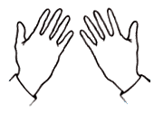
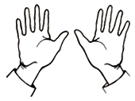
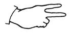
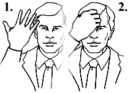

< Back to Home
Fun Facts
Signalling
In some stock exchanges, such as the American Stock Exchange, people are allowed to buy and sell stock through hand gestures.

With two hands up, palms facing toward you, this is signalling that you want to buy

With two hands up, palms facing away from you, this is signalling that you want to sell
When indicating price, specifically the last digit of the price, people hold up the number of fingers straight up to indicate 1-5, and then turn their hand parallel to the ground and hold up the number of fingers to indicate 6-9.

For this example, the number gestured here would be 7.
To indicate quantities, there are a number of different hand positions. Using the price that we just explained, to indicate quantities of one, touch the hand to the chin. When indicating quantities of 10, touch the hand to the forehead. When indicating quantities of one hundred, touch the forehead and make a fist directly after on the forehead.

This would indicate ‘five hundred’.
Weird Vocabulary
Big Ugly -
An older company associated with a “dirty” industry like mining
Cookie Jar Accounting -
When businesses hold capital in prosperous times to use during bad times
Dead Cat Bounce -
A short increase after a huge dip in stock
Puke Point -
Selling an asset when the value is dipping
Suicide Pill -
Any tactic that can prevent the liquidation of a company through a takeover
Opening Bell -
The time when trading starts in the NYSE and NASDAQ. The name comes from the bell that is run each day to signify the opening of the stock market
Stagflation -
When the economy has a high unemployment rate and inflation rates are high
Unicorn -
A private company that quickly shoots to $1 billion in revenue and has to consider going public
< Back to Home